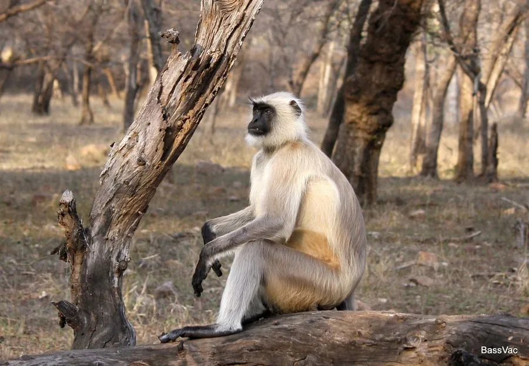

哺乳动物 · 动物界
长尾叶猴 Semnopithecus entellus

南亚常见的银灰色叶食猴，尾长超过体长，黑脸白须，常出没于林缘与寺庙附近，在印度被视为神猴哈努曼的化身。
- 分类
- 门脊索动物门纲哺乳纲目灵长目科猴科属长尾叶猴属
- 栖息环境
- 热带、亚热带落叶林与常绿林，也常见于寺庙、村镇附近的林缘
- 地理分布
- 印度、尼泊尔、孟加拉国等南亚地区的森林与山地
- 保护级别
- IUCN 无危（LC）
物种志
长尾叶猴体长 45–70 cm，尾长可达 80–100 cm，明显超过体长，雄性体重约 15–20 kg，雌性约 10–13 kg。全身毛色灰白至银灰，面部、耳和手足呈黑色，眉骨突出，四肢细长，尾端常呈浅色，是典型的树栖叶食猴类。
它们分布于印度、尼泊尔、孟加拉国等南亚地区的森林、寺庙和林缘，从喜马拉雅山麓到德干高原都能见到，常与人类活动区重叠。群体由十余只至数十只组成，白天在树冠层活动，以树叶、嫩芽、花和果实为食，胃部有复杂的发酵结构以消化纤维素。妊娠期约 190–210 天，每胎一仔，寿命约 20 年。
形态与习性
- 食性树叶、嫩芽、花与果实，偶食昆虫
- 体长45–70 cm，尾长 80–100 cm
- 体重雄性 15–20 kg，雌性 10–13 kg
- 寿命约 20 年
- 繁殖妊娠期约 190–210 天，每胎一仔
- 社会结构十余只至数十只的群体，成年雄性常守卫外围
趣味知识
- 长尾叶猴的尾比身体还长，跳跃时能帮助保持平衡。
- 它们有分室的胃，可借助微生物发酵分解树叶中的纤维素。
- 在印度教传说中，长尾叶猴是神猴哈努曼的化身，因而受到当地人的保护。